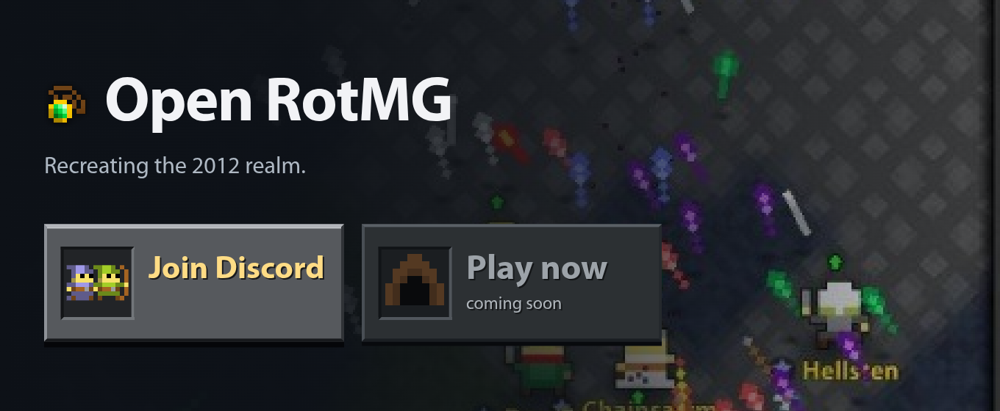
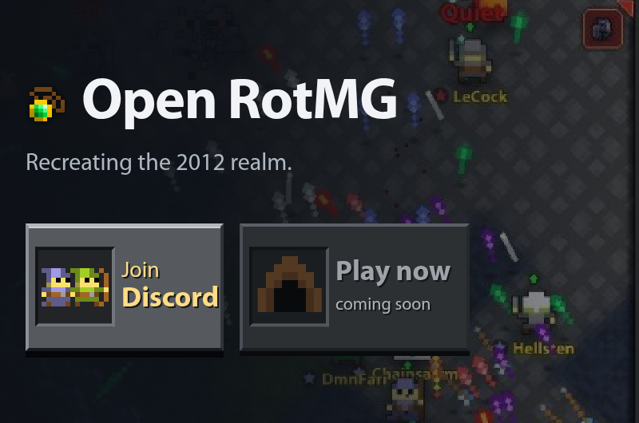
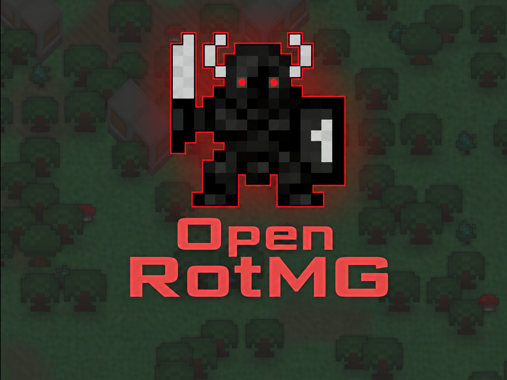

Branding
Forum banner


1360 × 560 PNG · Download banner
Compact forum banner


800 × 530 PNG · Download compact banner
Oryx organization logo


1448 × 1086 PNG · Download Oryx logo
Social image

1200 × 630 PNG · Download social image
Amulet icon
34 × 34 PNG · Download icon

Banner and social-image backgrounds depict historical Realm of the Mad God gameplay, not the current Open RotMG development build. Original game artwork belongs to its rightsholders; sharing these files does not grant a new license to that artwork.